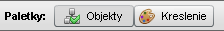
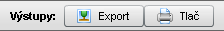
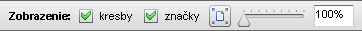

Okno mapy
Po otvorení mapy sa zobrazí v editore okno mapy spolu s vlastnou lištou nástrojov. Okno obsahuje horizontálny a vertikálny scrollbar. Pomocou nich je možné posúvať mapu, pokiaľ je väčšia ako mapové okno. Mapu je tiež možné v takomto prípade posúvať ťahaním myšou za ľubovoľné miesto na mape s výnimkou značky a jej popisky (vtedy sa ťahá samotná značka). Ťahanie mapy je tiež neaktívne počas kreslenia do mapy.
Lišta nástrojov je rozdelená na tri časti:

Paletky
- - otvára/zatvára plávajúce okno , ktoré slúži na nastavenie viditeľnosti a farby objektov a značiek.
- - otvára/zatvára plávajúce okno s nástrojmi na kreslenie.

Výstupy
- - umožňuje export celej mapy alebo zvoleného výseku do formátov JPEG a PNG.
- - umožňuje tlač celej mapy alebo zvoleného výseku.

Zobrazenie
- - zapne alebo vypne viditeľnosť užívateľských kresieb v mape.
- - naraz zapne alebo vypne viditeľnosť všetkých značiek v mape, bez ohľadu na ich nastavenie v okne .
- tlačidlo - nastaví veľkosť mapy tak, aby sa presne vošla do okna mapy. Mapa automaticky mení svoje zväčšenie pri každej zmene veľkosti okna programu. Toto tlačidlo sa samo vypne pri ručnej zmene zväčšenia mapy.
- slider - umožňuje nastaviť zväčšenie mapy v rozmedzí 100% až 500% s krokom 10%. Textové políčko vpravo udáva aktuálnu číselnú hodnotu. Zväčšenie mapy je možné meniť aj pomocou rolovacieho kolieska myši s krokom 40%. Pri použití sa tu zobrazuje aktuálne zväčšenie, ktoré v tomto prípade môže byť aj menšie ako 100%.
Značky v mape sa nezväčšujú proporcionálne s mapou, ale s menším koeficientom, pričom stredom zväčšovania značky je symbol značky.
Nastavenia zobrazenia nemajú žiaden vplyv na export alebo tlač mapy.
Práca s mapou
Mapa pozostáva z troch vrstiev (v tomto poradí):
Objekty
Zahŕňa všetky preddefinované geografické objekty (mestá, štáty, pohoria, moria, zemepisná sieť, mierka mapy atd.). Viditeľnosť a farba objektov v mape sa ovláda v okne , a nie je možné ju meniť priamo v mapovom okne. Samotné objekty nie je možné presúvať ani inak editovať.
Kresby
Medzi mapou a značkami sa nachádzajú užívateľské kresby (ak existujú).
Značky
Každému objektu prislúcha práve jedna značka, ktorá pozostáva zo symbolu značky a textovej popisky. Textová popiska je podfarbená polopriesvitným bielym obdĺžnikom, aby bola lepšie čitateľná na pozadí tmavých objektov. Poloha a text popisky je preddefinovaná, ale dá sa ľubovoľne meniť. Text popisky je v novej mape rovnaký ako názov objektu v okne . Viditeľnosť značky sa primárne ovláda v okne a je nezávislá od viditeľnosti samotného objektu.
Symbol značky vyjadruje typ objektu:
 jazero, vodná nádrž
jazero, vodná nádrž- rieka, vodopád
- VÚC (mapa Slovenska), štát (ostatné mapy)
- okres (mapa Slovenska)
- chránené územie (CHKO alebo NP na mape Slovenska)
- geomorfologický celok (mapa Slovenska), pohoria, nížiny, púšte (ostatné mapy)
- mesto
- hranica SR (mapa Slovenska), hranica svetadiela (Ázia, Európa), zemepisná sieť, mierka mapy (všetky mapy)
- ostrov, polostrov (okrem Slovenska), svetadiel, kontinent (mapa sveta)
- more, oceán (okrem Slovenska)
Ťahaním za symbol je možné značku presunúť na ľubovoľné miesto v rámci mapy. Kliknutím pravým tlačidlom myši na popiske sa objaví kontextové menu s možnosťou . Toto má rovnaký účinok ako skrytie značky prostredníctvom okna .
Kliknutím do popisky značky je možné editovať text popisky. Pri editovaní textu platia nasledovné pravidlá:
- stlačením ENTER sa potvrdí zmena textu a ukončí sa editácia
- stlačením ESC sa zrušia zmeny textu, popiska sa vráti do stavu pred editovaním a ukončí sa editácia
- kliknutím do inej popisky sa ukončí editácia
- popiska musí obsahovať aspoň jeden znak. Ak je pri ukončení editovania prázdna, zmeny sa zrušia a popiska sa vráti do stavu pred editovaním
Šírka políčka popisky sa automaticky prispôsobuje vloženému textu.